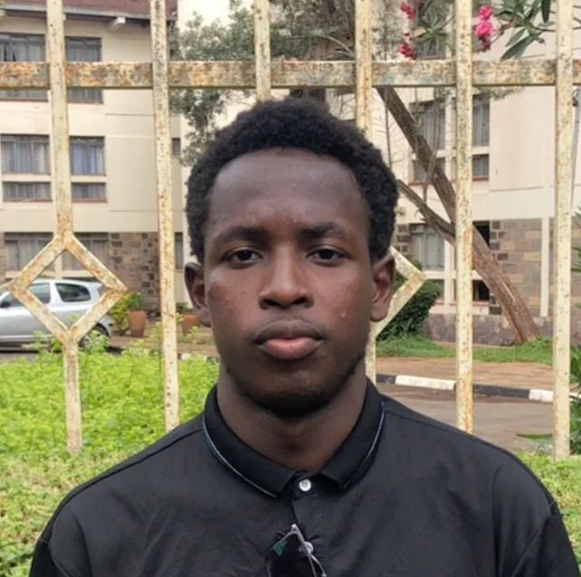
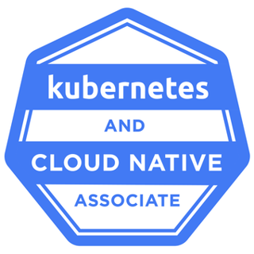
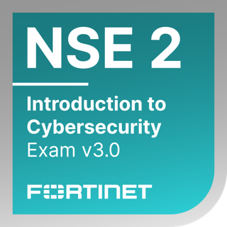
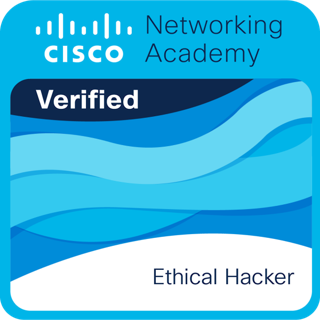

Open to Roles and Freelance jobs
Cloud and DevOps engineer.
I build infrastructure, secure, test, document.
I’m Geoffrey, a Junior Engineer in Nairobi. I work with Linux servers, Containers, Automated Pipelines, Backup and recovery with a focus on security & reliability. I am building toward Cloud Security and DevSecOps.

Follow a request
Every request crosses a network, runs on cloud infrastructure, and has to stay private. I work on all three.
It gets routed
Linux bridges and NAT, Windows Server DNS and DHCP, Twingate access and Cloudflare Tunnels.
See the home lab ↗It runs
AWS, Terraform, Docker and Kubernetes, with backups that are restored and checked.
See ZeroDrift ↗It stays private
Trivy and Wazuh, key-only SSH, and web security practice through CTFs.
See the CTF write-ups ↗Measured in real environments.
Ask my terminal
Type help to see what it knows.
Experience
- Junior DevOps EngineerTruehost Cloud · Aug 2026 - Present
- IT Intern, Systems and InfrastructureCFAO Mobility Kenya · Jul - Sep 2025
- IT Intern, Systems & SoftwareIsuzu East Africa · May - Aug 2024
- BSc ITMultimedia University of Kenya · Nov 2026
Projects
Each one has its own page with the architecture, the tests and what broke.
ZeroDrift
Terraform for an AWS VPC and server. Every change is a pull request with a plan to review before it is applied.
Containerized ToDo app
A REST API with a database, containerized with Docker Compose and deployed to AWS EC2.
PacketPulse
A network scanner with a web interface, run with Docker Compose. Built for networks I own or have permission to test.
All projects and write-ups
Home lab, health agent, backups and more.
Credentials

Kubernetes and Cloud Native AssociateVerify on Credly ↗
Fortinet NSE 2: Introduction to Cybersecurity
Ethical HackerCisco Networking Academy courseLet’s talk.
I’m open to Cloud, DevOps and DevSecOps/Security roles, and to small freelance jobs such as Cloud Environment setup, Cloud Security and Cost audit, Server Hardening, Bash Automation for Servers, CI/CD and Tested Backups.